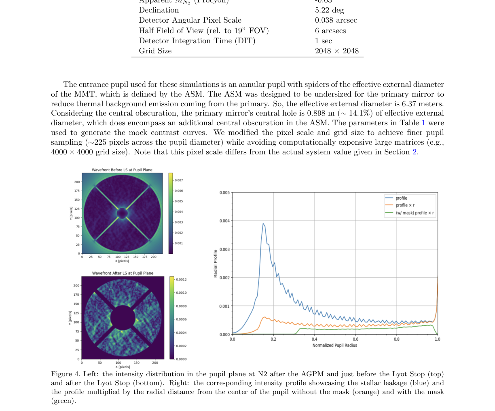
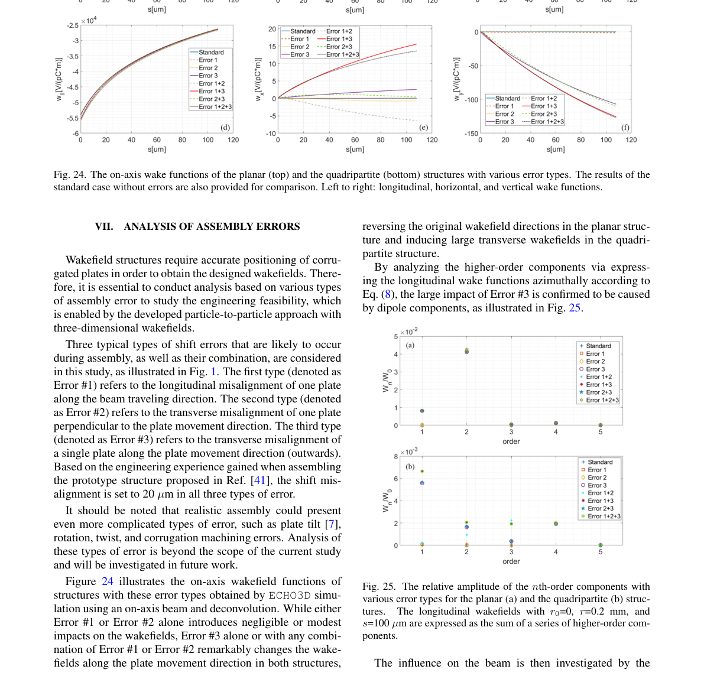

Research Paper Analysis
1. MIRAC-5 on the MMT with MAPS: annular groove phase mask N-band coronagraphic upgrade
Authors: Alyssa L. Miller, Jarron Leisenring, Michael Meyer, Gilles Orban De Xivry, Olivier Absil, Rory Bowens, Christian Delacroix, Olivier Durney, Pontus Forsberg, Bill Hoffmann, Mikael Karlsson, John D. Monnier, Manny Montoya, Katie Morzinski, Eric Pantin, Samuel Ronayette, Taylor L. Tobin, Grant West
Categories: astro-ph.IM
Published: August 5, 2025
Relevance: 1.0/10
Confidence: 0.90
Suggested Project: None
Summary
The paper reports the design, implementation, and performance simulation of a mid‑infrared coronagraphic upgrade for the MIRAC‑5 instrument on the 6.5‑m MMT telescope, using an annular groove phase mask (AGPM) and a Lyot stop optimized with the High‑Contrast End‑to‑End Performance Simulator (HEEPS). It characterizes the AGPM’s on‑axis rejection versus wavelength, designs an optimized Lyot stop to suppress diffracted starlight, and predicts raw and post‑ADI contrast performance (≈3×10⁻⁵ at 1″) that surpasses comparable space‑based instruments. The work also outlines future integration of the QACITS tip‑tilt sensing loop with the MAPS adaptive‑optics system.
Key Contributions
- Procurement and laboratory characterization of an N2‑band AGPM with ≤1600:1 on‑axis rejection.
- Design and optimization of a Lyot stop using HEEPS to balance contrast and throughput for the MMT pupil.
- End‑to‑end simulation of the coronagraphic system with realistic AO residuals, yielding predicted raw contrast ≈3×10⁻⁵ at 1″ and 5σ post‑ADI sensitivity curves.
- Demonstration that the upgraded MIRAC‑5 can achieve contrast comparable to or better than JWST/MIRI in the mid‑IR.
- Outline of future implementation of QACITS control loop for precise pointing.
Important Figure

Figure 4. Left: the intensity distribution in the pupil plane at N2 after the AGPM and just before the Lyot Stop (top) and after the Lyot Stop (bottom). Right: the corresponding intensity profile showcasing the stellar leakage (blue) and the profile multiplied by the radial distance from the center of the pupil without the mask (orange) and with the mask (green). (page 5).
Why It Matters
The paper focuses on mid‑infrared coronagraphy and adaptive‑optics instrumentation, which is unrelated to accelerator physics, stochastic oscillators, reinforcement learning for beam dynamics, or photoinjector beam quality. Therefore it has minimal relevance to the user’s research profile.
Links
- Abstract: https://arxiv.org/abs/2508.03919v2
- PDF: https://arxiv.org/pdf/2508.03919v2
- Extracted full text: /Users/thomas/Desktop/Agents/research-newsletter-agent/data/markdown/2508.03919v2.md
2. Development of a quadripartite wakefield structure as dechirper for free electron laser
Authors: Yu Ji, Congrui Lei, Jiahang Shao, Yong Yu, Jitao Sun, Xiaofan Wang, Huaiqian Yi, Zongbin Li, Lei He, Hongfei Wang, Jianping Wei, Wei Wei, Wei Wang, Jiayue Yang, Weiqing Zhang, Xueming Yang
Categories: physics.acc-ph
Published: May 3, 2026
Relevance: 6.0/10
Confidence: 0.90
Suggested Project: None
Summary
The paper presents a novel quadripartite corrugated wakefield structure designed as a dechirper for free‑electron lasers. By arranging four identical corrugated plates symmetrically, the design eliminates time‑dependent quadrupole wakefields while preserving strong longitudinal wakefields. Three‑dimensional wake potentials are computed with Panofsky–Wenzel theorem and ECHO3D, and wake functions are extracted via deconvolution. A particle‑to‑particle (P2P) tracking method incorporating these wake functions is developed to capture higher‑order and nonlinear effects. Simulations show that the quadripartite geometry reduces projected emittance growth, shortens the required dechirper length by ~25 % compared with a conventional planar structure, and highlights sensitivity to assembly errors such as plate‑motion misalignment.
Key Contributions
- Design of a symmetric quadripartite corrugated plate dechirper that cancels quadrupole wakefields.
- Three‑dimensional wakefield calculation using Panofsky–Wenzel theorem and ECHO3D with deconvolution to obtain wake functions.
- Development of a particle‑to‑particle tracking framework that includes full 3‑D wakefields and higher‑order nonlinearities.
- Demonstration that the quadripartite design achieves a 25 % shorter dechirper length while maintaining emittance preservation.
- Analysis of assembly‑error effects and mitigation strategies via beam‑based alignment and servo‑controlled plate adjustment.
Important Figure

Figure 24 illustrates the on-axis wakefield functions of structures with these error types obtained by ECHO3D simu- lation using an on-axis beam and deconvolution. While either Error #1 or Error #2 alone introduces negligible or modest impacts on the wakefields, Error #3 alone or with any combi- nation of Error #1 or Error #2 remarkably changes the wake- fields along the plate movement direction in both structures, (page 14).
Why It Matters
The paper focuses on wakefield structures, dechirping, and emittance preservation—topics closely related to beam dynamics and wakefield effects in accelerator projects. While none of the listed projects explicitly target dechirpers, the technical content is relevant to beam‑dynamics optimization and could inform related studies, warranting a moderate relevance score.
Links
- Abstract: https://arxiv.org/abs/2605.01840v1
- PDF: https://arxiv.org/pdf/2605.01840v1
- Extracted full text: /Users/thomas/Desktop/Agents/research-newsletter-agent/data/markdown/2605.01840v1.md
3. Neural network inverse design of nanophotonic scintillators
Authors: Nathan Regev, Avner Shultzman, Francis Loignon-Houle, Charles Roques-Carmes, Ido Kaminer
Categories: physics.optics, quant-ph
Published: June 15, 2026
Relevance: 2.0/10
Confidence: 0.90
Suggested Project: None
Summary
The paper presents a physics‑informed neural network that learns the stochastic scintillation cascade from high‑energy particle interaction to photon emission, enabling end‑to‑end differentiable optimization of nanophotonic scintillator geometry for arbitrary figures of merit such as emission patterns.
Key Contributions
- Physics‑informed neural network that models scintillation cascades from incident particles to photon emission.
- Integration of the neural network with photonic simulations to achieve fully differentiable end‑to‑end optimization of scintillator geometry.
- Demonstration of inverse design for nanophotonic scintillators tailored to X‑ray imaging applications.
- Comparison of the proposed method with previous non‑differentiable Monte Carlo approaches, showing accelerated design and optimization.
- Capability to optimize for arbitrary figures of merit, including specific target emission patterns.
Why It Matters
The paper focuses on neural‑network‑based inverse design of scintillators, a topic unrelated to accelerator beam dynamics, stochastic cooling, or photoinjector optimization. It does not address any of the goals or methods of the listed projects, so its relevance to the research profile is minimal.
Links
- Abstract: https://arxiv.org/abs/2606.16309v1
- PDF: https://arxiv.org/pdf/2606.16309v1
4. Reinforcement Learning applied to Optimization of LHC beams in the CERN Proton Synchrotron
Authors: Joel Axel Wulff, Alexandre Lasheen
Categories: physics.acc-ph
Published: July 29, 2026
Relevance: 8.5/10
Confidence: 0.90
Suggested Project: None
Summary
The paper reports an automated, reinforcement‑learning based optimization of the CERN Proton Synchrotron’s longitudinal triple‑splitting process, which creates the 25 ns bunch spacing for the LHC. A convolutional neural network predicts an initial phase correction from evolving bunch profiles, followed by two Soft‑Actor‑Critic agents that iteratively refine cavity phases and voltages. Models are trained on BLonD tracking simulations with added realistic noise, enabling robust transfer to the machine. The system achieved target splitting quality in fewer than ten steps in 2022 and has been deployed as an on‑demand and fully autonomous controller since March 2025, marking one of the first RL‑based beam‑quality optimizers in the CERN injector complex.
Key Contributions
- Automated RL‑based optimization of the PS longitudinal triple‑splitting process
- Hybrid architecture combining CNN‑based phase correction with sequential SAC agents
- Training on realistic BLonD simulations with noise augmentation for robust machine transfer
- Demonstrated rapid convergence (≤10 steps) and operational deployment as an autonomous controller
Why It Matters
The paper directly addresses reinforcement learning for beam dynamics optimization in a CERN injector, matching the user’s Phase Space Reinforcement Learning project goals and methods. It provides a concrete RL implementation and operational results, making it highly relevant to the user’s research focus.
Links
- Abstract: https://arxiv.org/abs/2607.26697v1
- PDF: https://arxiv.org/pdf/2607.26697v1
5. High-power attosecond X-ray free-electron lasers: physics and design strategy
Authors: Chenzhi Xu, Jiawei Yan, Ye Chen, Winfried Decking, Marc Guetg, Tianyun Long, Bingyang Yan, Haixiao Deng
Categories: physics.acc-ph
Published: April 20, 2026
Relevance: 2.0/10
Confidence: 0.90
Suggested Project: None
Summary
The paper presents a unified, scheme‑independent analysis of the physics governing high‑power attosecond X‑ray free‑electron laser (XFEL) operation from a short, high‑current electron‑beam spike. It identifies the effective lasing length as the key parameter controlling peak power and pulse duration in the post‑saturation superradiant regime, and quantifies how slice energy spread, slice emittance, energy chirp, undulator tapering, and transverse beam tilt trade off against each other to optimize terawatt‑class attosecond pulses.
Key Contributions
- Derivation of a general, scheme‑independent framework linking effective lasing length to attainable peak power and pulse duration for short‑current spikes.
- Quantitative assessment of how slice energy spread, slice emittance, energy chirp, undulator tapering, and transverse beam tilt affect peak power, pulse shortening, and single‑spike probability.
- Provision of facility‑independent design guidelines for electron‑beam phase‑space manipulation to achieve terawatt‑class attosecond XFEL performance.
Why It Matters
The paper focuses on XFEL physics and design, which is not directly related to the user’s accelerator physics projects that center on stochastic cooling, reinforcement learning for beam dynamics, or machine learning for photoinjector optimization. No overlap in methods or goals is evident from the abstract.
Links
- Abstract: https://arxiv.org/abs/2604.18447v2
- PDF: https://arxiv.org/pdf/2604.18447v2
6. Neural Networks for Inverse Design of Cascaded-Mode Near-Field Landscapes
Authors: Wannes Luts De Martelaere, Joeri Lenaerts, Vincent Ginis
Categories: physics.optics, physics.app-ph, physics.comp-ph
Published: June 25, 2026
Relevance: 2.0/10
Confidence: 0.90
Suggested Project: None
Summary
The paper presents a deep‑learning framework that learns the mapping between multimode waveguide design parameters and the resulting optical near‑field landscapes. Using multilayer neural networks trained on simulated data, the authors perform gradient‑based inverse design to recover target longitudinal and lateral field profiles, demonstrating accurate reconstruction of complex longitudinal patterns and improved lateral reconstruction through data augmentation.
Key Contributions
- Development of a multilayer neural network model that captures the relationship between waveguide modal coefficients and near‑field distributions.
- Application of gradient‑based optimization on the trained network to solve the inverse design problem for cascaded‑mode near‑field landscapes.
- Demonstration of accurate longitudinal field reconstruction and improved lateral field design via training data selection and augmentation.
- Establishment of deep learning as a scalable, efficient tool for inverse design in cascaded‑mode waveguide systems.
Why It Matters
The paper focuses on optical near‑field design using neural networks in multimode waveguides, which is unrelated to accelerator physics topics such as beam dynamics, stochastic cooling, or photoinjector optimization. No direct overlap with the listed projects.
Links
- Abstract: https://arxiv.org/abs/2606.27099v1
- PDF: https://arxiv.org/pdf/2606.27099v1